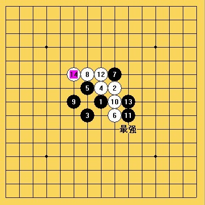
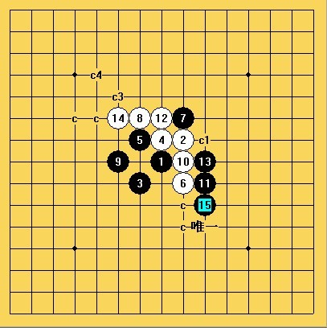
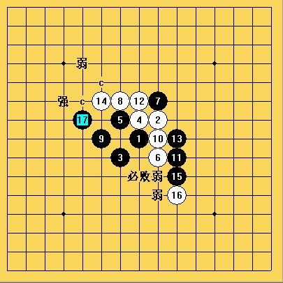
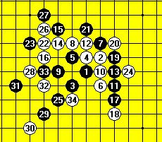

[学术讨论]这个到底如何地毯胜？
#1 [学术讨论]这个到底如何地毯胜？ 作者：聂淼 发表时间：2009-4-23 19:10:45
=======上图对应的爱五子棋谱代码如下，以便你拆解：========
h8i9g7h9g9i7i10g10f8i8j7h10j8f10
======================================================
［此帖子已被 茗弈小刀 在 2009-4-23 19:42:31 编辑过］
#2 Re:这个到底如何地毯胜？ 作者：无尽 发表时间：2009-4-23 19:27:34
只知道15-e10
#3 Re:[学术讨论]这个到底如何地毯胜？ 作者：方圆之外 发表时间：2009-4-23 20:01:10
 这个也地毯了？这个14应该算是次强吧。。也必了？！
这个也地毯了？这个14应该算是次强吧。。也必了？！
#4 Re:[学术讨论]这个到底如何地毯胜？ 作者：茗弈小刀 发表时间：2009-4-23 20:03:18
哪什么都地毯呢？都地毯了那大家还下什么棋！无尽说那个15胜了，记得是俄罗斯研究的吧。#5 Re:[学术讨论]这个到底如何地毯胜？ 作者：wd1988 发表时间：2009-4-23 20:31:46
就算是俄罗斯的什么研究，也肯定没地毯。但是黑很优，白要和棋估计困难
#6 Re:[学术讨论]这个到底如何地毯胜？ 作者：刀魂 发表时间：2009-4-23 21:19:13
相当的 困难，，，不过这个14，黑棋还是比较好控制的。。。



给三个谱说明一下吧，，，希望对大家可以提供一个思路。。。
#7 Re:[学术讨论]这个到底如何地毯胜？ 作者：忧郁的双眼 发表时间：2009-4-23 21:37:56
刀魂只会说控制控制
实际上从我跟他下的几盘棋来看
他的控制力相当弱
#8 Re:Re:[学术讨论]这个到底如何地毯胜？ 作者：刀魂 发表时间：2009-4-23 21:44:16
引用：
原文由 忧郁的双眼 发表于 2009-4-23 21:37:56 :刀魂只会说控制控制
实际上从我跟他下的几盘棋来看
他的控制力相当弱
别再 这里 说风凉话。。。难道还要我再说一遍嘛，不服，就出来砍砍，，，别贬低别人，抬高自己。。。最鄙视这种人
#9 Re:[学术讨论]这个到底如何地毯胜？ 作者：賢周 发表时间：2009-4-24 6:34:34
=======上图对应的爱五子棋谱代码如下，以便你拆解：========
h8i9g7h9g9i7i10g10f8i8j7h10j8f10f11e9j6j5j9j10h11e10d10k8f6
======================================================
#10 Re:[学术讨论]这个到底如何地毯胜？ 作者：少欺负我 发表时间：2009-4-24 10:04:43
学习下
#11 Re:[学术讨论]这个到底如何地毯胜？ 作者：魔法少年 发表时间：2009-4-24 10:20:23
9楼的，无法必胜吧。［ 茗弈小刀 于 2009-4-24 10:21:23 时奖励此帖[金币加 20 威望加1］
#12 Re:[学术讨论]这个到底如何地毯胜？ 作者：茗弈小刀 发表时间：2009-4-24 10:22:07
魔法少年请给个图说明下，谢谢。#13 Re:[学术讨论]这个到底如何地毯胜？ 作者：魔法少年 发表时间：2009-4-24 10:27:38
SORRY,俺不会发图呀：（
我最早看到这手是在03年左右，李大哥的介绍。他对此有比较深入的研究。实战中确实不错。
魔法威望不够不能发附件，所以送魔法一个威望，就可以发图了。不过也可以发互动棋谱，就在右上角。
［ 雨一直下 于 2009-4-24 12:40:41 时奖励此帖[金币加 20 威望加1］
#14 Re:[学术讨论]这个到底如何地毯胜？ 作者：茗弈小刀 发表时间：2009-4-24 10:30:27
9楼的那个25手记得应该在D5是正确的,不过不一定能胜。#15 Re:[学术讨论]这个到底如何地毯胜？ 作者：学生刀 发表时间：2009-4-24 10:41:21
刀魂专有名词 局面很好控制
#16 Re:[学术讨论]这个到底如何地毯胜？ 作者：学生刀 发表时间：2009-4-24 10:44:40
第二个专有名词 通过外围（中盘）做杀取胜#17 Re:[学术讨论]这个到底如何地毯胜？ 作者：安娜制作所 发表时间：2009-4-24 10:56:59
 不要计较啦!觉得好看多一次,不好就跳过哈!
不要计较啦!觉得好看多一次,不好就跳过哈!
#18 Re:[学术讨论]这个到底如何地毯胜？ 作者：忧郁的双眼 发表时间：2009-4-24 12:36:53
韩国朋友的下法可以考虑
挺好
#19 Re:[学术讨论]这个到底如何地毯胜？ 作者：魔法少年 发表时间：2009-4-24 13:48:12
34是个不错的定型。黑有胜么？
#20 Re:[学术讨论]这个到底如何地毯胜？ 作者：魔法少年 发表时间：2009-4-24 14:04:44
这种野蛮进攻，实战中肯定很爽，哈哈
=======上图对应的爱五子棋谱代码如下，以便你拆解：========
h8i9g7h9g9i7i10g10f8i8j7h10j8f10f11e9j6j5j9j10h11e10d10k8f6e11e12d8e5d4c7e7e8g6f4d6f5f7d7
======================================================
［ 茗弈小刀 于 2009-4-24 15:39:15 时花20金币送鲜花一朵］
［ 雨一直下 于 2009-4-24 17:32:53 时花20金币送鲜花一朵］
#21 Re:[学术讨论]这个到底如何地毯胜？ 作者：极地剑客 发表时间：2009-5-21 12:37:20
终于看见壮年了啊~
#22 Re:[学术讨论]这个到底如何地毯胜？ 作者：启蒙 发表时间：2009-5-21 12:47:16
这个张进宇LS不是说过黑必胜了嘛。#23 Re:[学术讨论]这个到底如何地毯胜？ 作者：卖身打胎 发表时间：2009-5-21 17:58:33
总有人喜欢拿鸡毛当令箭
#24 Re:[学术讨论]这个到底如何地毯胜？ 作者：流逝 发表时间：2009-5-21 18:28:28
 我等馅饼，谁快发个地毯谱来吧
我等馅饼，谁快发个地毯谱来吧
#25 Re:[学术讨论]这个到底如何地毯胜？ 作者：冷面孤煞 发表时间：2009-5-22 19:11:29
 有人地毯这个14？？？？？？？？？？？？？？？？如果有，有卒拜你为师，以表诚意地毯谱一套相送
有人地毯这个14？？？？？？？？？？？？？？？？如果有，有卒拜你为师，以表诚意地毯谱一套相送